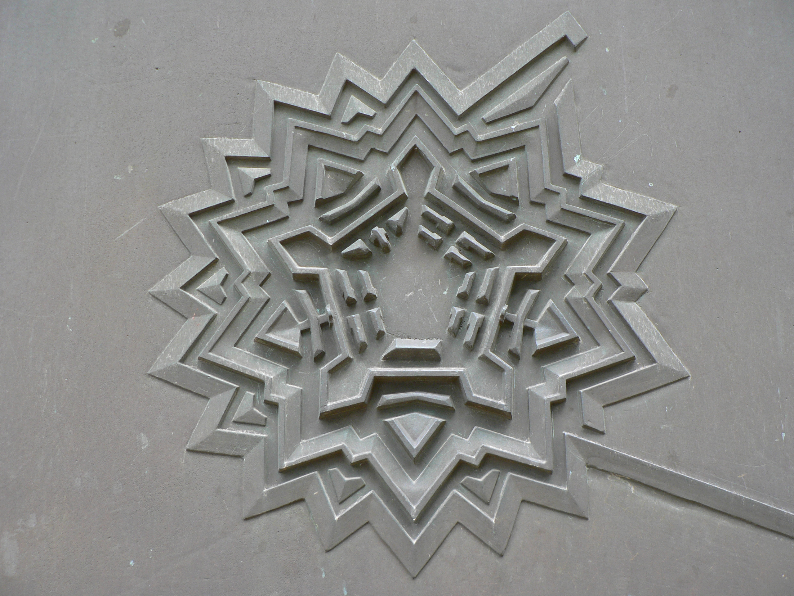

CityLoop Quest Lille


Lille aime les détails qui se cachent en pleine vue. La Grand-Place porte officiellement le nom de place du Général-de-Gaulle, mais beaucoup de Lillois continuent à utiliser son nom familier. Ce double usage dit quelque chose de la ville : elle respecte les références nationales, tout en gardant ses habitudes locales. C’est souvent dans ces écarts de vocabulaire que l’on sent le mieux la vie d’un lieu.

La Vieille Bourse réserve une autre surprise. Derrière ses façades très décorées se trouve une cour intérieure qui accueille régulièrement bouquinistes, joueurs d’échecs et promeneurs. Le bâtiment, né pour le commerce, reste donc un espace d’échange, mais les marchandises ont changé : livres, regards, parties silencieuses et conversations remplacent les anciennes transactions. Le lieu a gardé sa fonction sociale tout en changeant de rythme.

La citadelle de Vauban, parfois appelée reine des citadelles, n’est pas un monument que l’on comprend d’un seul regard. Une grande partie de son intérêt tient à son plan, à ses fossés, à ses bastions et à sa relation avec le paysage. Elle rappelle que Lille fut une frontière sensible, surveillée et défendue. Aujourd’hui, les abords verts et les promenades familiales contrastent avec cette origine militaire.

La Braderie possède elle aussi ses codes. Les tas de coquilles de moules devant les restaurants ne sont pas seulement des déchets spectaculaires : ils participent à une forme de compétition bon enfant et à une image très identifiable de l’événement. Comme souvent à Lille, l’anecdote culinaire rejoint la fête populaire, le commerce et l’occupation joyeuse de l’espace public.

Gardez l’œil ouvert : Lille est pleine de petites histoires de seuils, d’enseignes, de façades datées, de noms de rues et de transformations discrètes. Un ancien lieu de travail devient espace culturel, une place officielle garde un surnom, une cour commerciale devient refuge de lecteurs. CLQ vous invite à collectionner ces indices : ils donnent à la ville une profondeur que les grandes dates seules ne suffisent pas à raconter.
Ces anecdotes ont surtout une vertu : elles obligent à regarder la ville autrement. Un nom d’usage, une cour cachée, un plan de fortification ou une pile de coquilles racontent chacun une relation entre les Lillois et leurs lieux. Rien n’est anecdotique si le détail aide à comprendre une habitude, une fierté ou une transformation. À Lille, la petite histoire sert souvent de porte d’entrée vers la grande. Les anecdotes lilloises fonctionnent bien parce qu’elles ne sont pas isolées du paysage. La Grand-Place porte un nom officiel et un nom d’usage ; la Vieille Bourse cache une cour vivante derrière une façade ordonnée ; la citadelle se comprend mieux par son dessin que par une simple entrée ; les moules-frites de la Braderie transforment un repas populaire en symbole visuel. Chacun de ces détails relie un lieu à une pratique. Ils montrent que Lille aime les doubles sens : officiel et familier, monumental et quotidien, militaire et paysager, gastronomique et festif. En gardant l’œil ouvert, vous trouverez d’autres indices du même type : une date sur une façade, une cour derrière une porte, une trace industrielle devenue culturelle. C’est souvent par ces petits détours que la ville devient mémorable. Il ne faut pas chercher ces détails comme des preuves savantes, mais comme des invitations à ralentir. Une anecdote réussie change la manière de regarder un lieu connu : elle donne envie d’entrer dans une cour, de lever les yeux, de lire un nom de rue ou de comparer le passé et l’usage actuel. C’est là que la visite devient personnelle. Les meilleures anecdotes ne remplacent donc pas l’histoire ; elles l’éclairent par le côté. Elles donnent une prise concrète au visiteur, surtout lorsqu’un monument paraît trop complexe ou qu’une place semble trop familière pour être vraiment regardée.